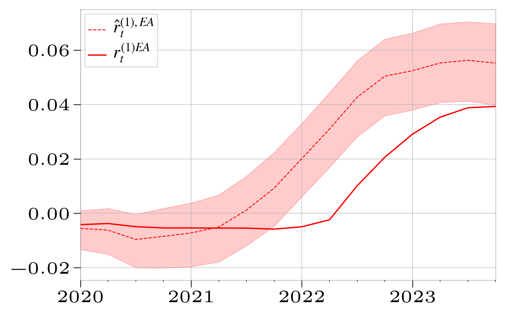
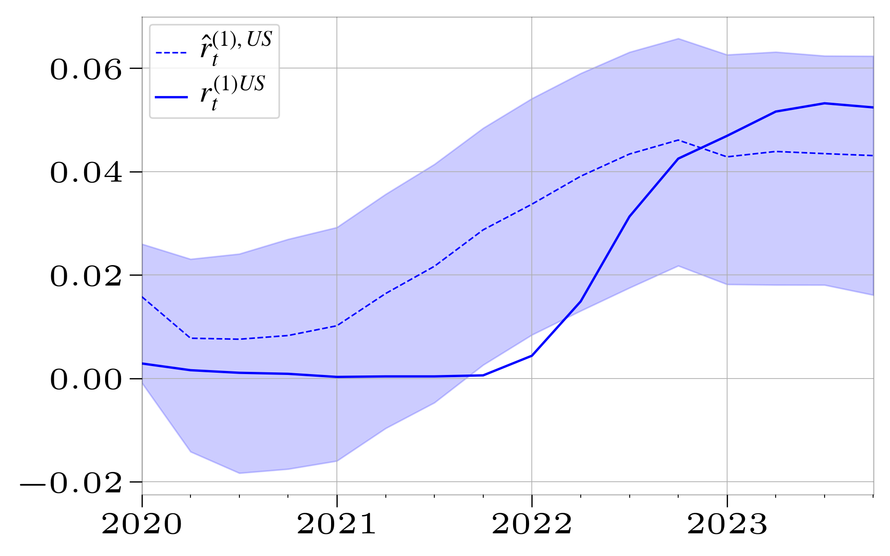
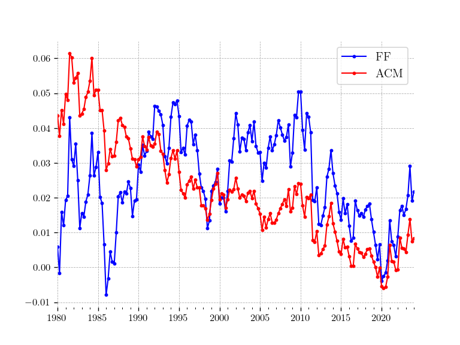

About Me
I'm PhD student in Finance at Bocconi University. My background is in Mathematics (Bachelor at the Universidad Autonoma de Madrid) and Mathematical Finance (MSc at the University of Manchester). I have been working in Macro-Finance (specifically in Monetary Policy) and Fin-Tech applications to the Supply Chain. I'm also interested in Large Language Models (LLMs) and their applications to Financial Economics. I am pretty open to collaborations, discussions and critical feedback.
Research
Working Papers
-
Monetary Policy in the COVID Era and Beyond: The Fed vs the ECB — with Carlo A. Favero
This study examines monetary policy during and post-COVID by analysing innovative rules based on data from before the pandemic. It models fluctuating monetary policy rates using a stochastic trend, linking potential output growth, demographic age distribution, and inflation expectations to the prevailing interest rate trends in both the US and the Eurozone. The cyclical variations in short-term rates are associated with monetary policy through the conventional Taylor rule indicators. Whilst the standard model is robust for the US both in and out of sample, the Eurozone displays less consistent in-sample results and marked deviations in out-of-sample tests. Addressing the ECB's concerns about bond market fragmentation doesn't yield better results. Instead, a model in which the ECB follows the US example with caution and delay proves more effective.
  -
Modelling the Term Structure with Trends in Yields and Cycles in Excess Returns — with Carlo A. Favero
This paper proposes an Affine Macro Term Structure model in which yields are drifting, sharing a common stochastic trend driven by the drift in short-term (monetary policy) rates and excess returns are stationary as the compensation for risk is driven by the cycles in yields. We apply the approach to US data and compare the empirical results from the new specification with those obtained from standard Affine Term Structure models. The cycle-trend decomposition-based Affine Term Structure model produces much better forecasts of the dynamics of yields and, consequently, different and stationary dynamics for the term premia.

Teaching
I have been a teaching assistant since the course 2022/2023. This year I will be lecturer as well. Below you can find the detailed information:
Courses a.y. 2024/2025
- 20136 ADVANCED MATHEMATICS FOR ECONOMICS AND SOCIAL SCIENCES (TA)
- 30560 MATHEMATICAL MODELLING FOR FINANCE (Teaching, Master Course)
- 40215 FINANCE 2 (Teaching, PhD Course)
Courses a.y. 2023/2024
- 20135 TEORIA DELLA FINANZA / THEORY OF FINANCE (TA)
- 20136 ADVANCED MATHEMATICS FOR ECONOMICS AND SOCIAL SCIENCES (TA)
- 20897 ADVANCED CORPORATE FINANCE FOR MANAGEMENT (TA)
- 30268 MATEMATICA GENERALE E FINANZIARIA / MATHEMATICS (TA)
- 30454 LOGIC AND METHODOLOGY OF SOCIAL SCIENCES (TA)
- 30560 MATHEMATICAL MODELLING FOR FINANCE (TA)
Courses a.y. 2022/2023
Resources
Here you can find some useful resources and code repositories:
-
ConsensusEconomics Data Handler
IMPORTANT DISCLAIMER: This repository requires a valid Consensus Economics subscription. Access to Consensus Economics' proprietary database is a prerequisite for utilizing this code. This repository does not contain or share any Consensus Economics data; it solely provides tools and methods for processing and analyzing the data once you have legitimate access to it through a valid subscription.
A collection of tools and utilities designed to efficiently handle and process Consensus Economics datasets. This repository includes functions for data cleaning, transformation, and analysis, specifically tailored for working with Consensus Economics' file formats and data structures.
-
Macroeconomic Data Handler
A continuously updated Python package for fetching, analyzing, and storing macroeconomic data. Currently integrates data from Federal Reserve Economic Data (FRED) and Federal Reserve Green Book Projections, with AWS integration and LLM capabilities via Groq. Features include:
- Automated retrieval of key economic indicators from FRED API using LLM capabilities via Groq to find the appropriate code for the variable the researcher is asking for
- Historical Federal Reserve Green Book Projections data extraction and analysis
- AWS Integration for secure storage and management
- Interactive command-line interface for custom data queries
- Tracking of essential metrics (GDP, Industrial Production, Unemployment, CPI, etc.)
-
Term Structure Models Implementation (Classical vs Mine)
This repository implements the model developed in the forthcoming Econometric Reviews paper "Towards Data-Congruent Models of the Term Structure of Interest Rates" (coauthored with Carlo A. Favero). It provides a comprehensive implementation of term structure models for analyzing yield curves and macroeconomic factors, focusing on:
- Implementation of ACM (Adrian, Crump, Moench) and FF (Favero, Fernández-Fuertes) models
- Data-congruent term structure modeling with macroeconomic factors
- Common trend component analysis
- Out-of-sample forecasting comparisons
- Visualization tools for yield curves, model parameters, and returns